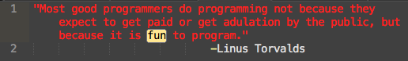

Register for the next Dojo
The details on our next dojo and signups can be found here. Come check it out, everyone is welcome!
About the Dojo
The DC Python Dojo started in July 2015 when a formerly UK-based programmer realized he missed the "London Rules" Python dojo and decided to start one here in DC along the same principles. It's a chance for programmers of all experience levels to work in small groups solving simple challenges using Python. We don't always find a solution, but the emphasis is on having fun while trying out new things in Python.
The dojo is meant to be an inclusive and encouraging environment. We work to make sure everyone can get involved and feels welcome. Pythonistas from all backgrounds should feel free to join us!
The dojo starts with time to eat, socialize, and brainstorm project ideas. At 7:00 we vote on that night's project and randomly divide into teams, at which point the coding gets started. At 9:00 we come back together and groups share what they've done, and once we're all done many of us head to a local bar for some post-dojo beers!
Dojo Projects
Code for our previous projects can be found on Github, but here's a few we've worked on in the past:
- Weather Checker - Using weather forecasting APIs, create an app that will tell you if it's raining outside if you're stuck at your desk and can't get to the window.
- Six Degrees of Kevin Bacon - Figure out a way to check if and how actors are linked to Kevin Bacon
- Twitter Debate Reaction - Look at how to collect and alanyze Twitter reaction to a presidential debate in real time.
Have an idea for a dojo project? Bring it to the next dojo or email it to us!
Thanks to our sponsors
Thanks to our location sponsor, IREX!

Contact Us
Have a question about the dojo?
Feel free to email us, get in touch with us on Twitter, or check us out on Github!
But better yet, why not come to our next dojo to see what it's all about? We hope to see you there!